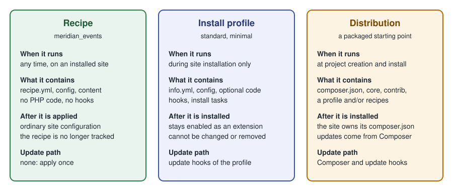

Drupal Recipes
|
This content was generated with the assistance of AI and should be verified against the official documentation before being relied on in production. |
A recipe is a directory with a recipe.yml file (and optionally configuration, content and a composer.json) that
tells Drupal to install some modules and themes, import or create some configuration, change existing configuration and
create some content, once, on a site that is already installed. A recipe is applied, not installed: after it has run,
nothing in the site remembers that it existed, and the result is ordinary Drupal configuration that you manage
like any other. Recipes are the building blocks of Drupal CMS (see
Drupal CMS and site templates), but they work on any Composer-based
Drupal 11 site, and they are the supported replacement for the "feature" bundles and the install-profile tricks that
earlier Drupal versions used.
This page was checked against the official documentation on 2026-10-30. It is written against Drupal 11.4.x, Drush 13
or 14 and PHP 8.3 or later (see Requirements and hosting for the full
baseline). The examples use the fictitious Meridian Museum site from the sub-section index
and build the meridian_events recipe from scratch. Recipes appeared in Drupal 10.3; the Drupal 10 line ends on
2026-12-09, so new work should target Drupal 11, and the notes below say where a feature needs 11.1.2, 11.2 or
11.3. Drupal 12.0.0 is planned for the week of 2026-12-07; see
Preparing for Drupal 12 for what changes there.
What a recipe is, and what it is not
The official documentation describes recipes as a tool for site builders and developers to add functionality to a Drupal site by automating module installation and configuration, through the user interface or through the recipe runner. Four properties follow from that definition.
-
Applied, not installed. Modules have an installed or uninstalled state in
core.extension; recipes do not. There is no list of "applied recipes" in the Extend screen and no uninstall button. -
Composable. A recipe can apply other recipes first (
recipes:key), but it does not inherit from them. Small recipes that each do one thing are preferred over a recipe that configures a whole site. -
No lock-in. Because everything a recipe creates is normal configuration or content, a site builder can edit, export or delete it afterwards with the usual tools.
-
Declarative. A recipe contains data: YAML files, configuration, content. It cannot ship PHP code, hooks, services or plugins. Anything that needs code belongs in a module, and the recipe lists that module under
install:(and thecomposer.jsonrequires it).
What recipes deliberately do not do is just as important:
-
They have no update path. If a later version of a recipe changes a view or a field, applying it again does not migrate the site; it applies the new definition on top of whatever is there, subject to the
strictrules described below. Drupal CMS says the same about its own recipes: once applied, the site is ordinary Drupal. -
They have no rollback. The official how-to page does not explain how to reverse a recipe, so the safe approach is to apply on a copy of the site, review the configuration changes, and deploy those with configuration management.
-
They are not part of deployment. The documentation states that you apply a recipe to a site and then deploy as usual; recipe application on production is out of scope for the Recipe initiative, and creating content on production is a different concern from carrying configuration there.
-
They do not replace modules. Hooks, services, plugins, routes and database schema all stay in modules.
Older books describe recipes as a future initiative. Drupal 10 Masterclass (2023), for instance, presents Recipes, Project Browser and Automatic Updates as planned work; recipes shipped in Drupal 10.3, and the Drupal CMS distribution introduced in 2025 is built from them. Drupal 10 Development Cookbook (2023) does not cover recipes at all. For both books, the sections on configuration "packages" and install-profile configuration overrides are better replaced by a recipe plus configuration management.
How a recipe is applied
When you run the recipe command, Drupal reads recipe.yml, validates it, collects any inputs, and then performs the
steps in a fixed order. Dependencies are handled first: every recipe listed under recipes: is applied before the
recipe that names it, and if one of them fails the dependent recipe is not applied.
The documented implementation order is: install modules and themes, then validate configuration, then write configuration, then create content. Two consequences matter in practice:
-
Module installation happens before configuration import, so configuration that depends on a module’s field types or plugins can be imported in the same run. A module installed this way only receives its simple configuration (
config/installfiles) at install time; everything else comes from the recipe. -
Content comes last, so content can refer to the content types, fields and taxonomy vocabularies the same recipe has just created.
The recipe.yml keys
A recipe directory contains recipe.yml, plus optionally a composer.json, a logo.png, a config/ directory and a
content/ directory. The keys of recipe.yml are:
| Key | Meaning |
|---|---|
|
Human-readable name shown in lists, for example in Project Browser. |
|
Longer description of what the recipe does. |
|
Groups related recipes, in the way |
|
Recipes to apply before this one. An entry is a machine name or a path relative to the Drupal root, such as
|
|
Modules and themes to install if they are not installed already. Drupal works out whether each name is a module or a theme. Only simple configuration is created at this point. |
|
Named inputs that the person applying the recipe can supply. They are referenced later as tokens in
|
|
Maps a module name to the list of its configuration objects to import, or |
|
Controls how configuration already present on the site is compared with the recipe’s. See Strict, import and conflicts. |
|
Changes to configuration that already exists or is being created, keyed by config entity ID. See Config actions. |
|
Content created after the configuration is in place. In practice this is the |
|
Free-form data keyed by project name (for example |
The recipe’s own config/ directory is the simplest way to ship new configuration: files named like exported
configuration (node.type.event.yml, field.storage.node.field_event_dates.yml, and so on) are imported when the
recipe is applied. The config.import key is for configuration that other modules or recipes already ship.
A real core example makes the shape concrete. The article_tags recipe in core applies two other recipes, installs the
Views module, imports one view from the Taxonomy module, marks one field storage as strict, and uses the
setComponent action to add the tags field to the Article form and view displays:
name: 'Article tags'
description: 'Provides tags on article content.'
type: 'Content field'
recipes:
- article_content_type
- tags_taxonomy
install:
- views
config:
strict:
# Treat field storages strictly, since they influence the database layout.
- field.storage.node.field_tags
import:
taxonomy:
- views.view.taxonomy_term
actions:
core.entity_form_display.node.article.default:
setComponent:
name: field_tags
options:
type: entity_reference_autocomplete_tags
weight: 3
region: contentSource: Drupal API: core/recipes/article_tags/recipe.yml (shortened)
The page_content_type recipe, the one that provides the Basic page content type in core, shows the other common
pattern: it installs node and path and imports only view modes and node actions from the Node module, because the
content type, field and display configuration live in the recipe’s own config/ directory.
name: 'Basic page'
description: "Provides Basic page content type and related configuration."
type: 'Content type'
install:
- node
- path
config:
import:
node:
- core.entity_view_mode.node.full
- core.entity_view_mode.node.rss
- core.entity_view_mode.node.teaserSource: Drupal API: core/recipes/page_content_type/recipe.yml (shortened)
This matters for tutorials. Since Drupal 11.4 the Standard install no longer creates the Article and Page content types, so a site that wants them applies these core recipes instead. Tutorials and books that begin "install Drupal with the Standard profile and open the Article content type" need a first step that creates the type, either through Content types and fields or by applying the matching core recipe.
Inputs
An input lets one recipe be applied in slightly different ways. Each entry under input: has a name and these keys:
| Key | Meaning |
|---|---|
|
Required. A Typed Data primitive: |
|
Required. What the input is for. |
|
Optional validation, in the same format as configuration schema constraints: each key is a constraint name and its
value a list of options, for example |
|
Optional Form API properties for showing the input in a form (the installer). Every key must start with |
|
Optional command-line prompt. |
|
Required. Used when nobody can be asked, such as in non-interactive mode. |
Inside config.actions, an input is referenced with the token syntax ${name}. Tokens can stand in for the
configuration entity ID (the key of an action, as in user.role.${editor_role}) and for action arguments, but they
cannot target simple configuration objects or entity types. Using a token in a wildcard-style key requires Drupal
11.1.2 or later; the documentation states explicitly that this is not available in Drupal 10.
When you apply the recipe with Drush, an input is passed with --input in the form
--input=RECIPE_NAME.INPUT_NAME=VALUE; the recipe name is part of the option so that the value can also be addressed to
one of the recipe’s dependencies.
Strict, import and conflicts
Importing configuration into a site that already has some of it is where recipes fail most often. config.strict
decides what happens when an object the recipe wants to import already exists with different values:
-
true(the default): the existing configuration must match the recipe exactly, otherwise applying stops with an error. -
false: if anything differs, the import of that object is skipped and the existing configuration stays. -
a list of configuration names: only those objects are compared strictly; every other object is treated leniently. The core
article_tagsrecipe uses this form for the tags field storage, with the comment that field storages influence the database layout and therefore must not differ silently.
Strictness is why a recipe is best applied to a fresh or minimal site. The Recipe initiative documentation suggests the
minimal install profile for testing, to reduce configuration collisions with a larger profile. Applying the same
recipe twice is usually harmless for createIfNotExists and grantPermissions actions, but it can fail strict
comparisons and it can duplicate default content, because the second run creates the entities again.
Config actions
Importing complete configuration files is wasteful when a recipe only wants to add one permission to a role or one field
to a display. A config action is a small, named operation applied to one configuration object. Under
config.actions the key is the configuration entity ID (wildcards such as user.role.* or
core.entity_view_display.node.*.default are allowed), and below it come one or more actions with their arguments.
Because the actions are plugins, other modules can add their own; core and the popular contributed modules provide the
set below. The list is on the official Config Action List page; the documentation gives a Drupal version only for the
two items called out at the end.
| Action | What it does |
|---|---|
|
Creates a config entity; an error if the ID already exists. |
|
Creates a config entity only when the ID does not exist. The usual way to ensure a role, a view mode or a display exists before other actions refer to it. |
|
Creates related entities for each bundle of an entity type, using wildcards such as |
|
Clones a config entity under a new ID, leaving an existing target untouched. |
|
Switch a config entity on or off, or set its status to a boolean. |
|
Change a property of a config entity. Use only when no dedicated action exists. |
|
Set third-party settings ( |
|
Updates keys of any configuration object, including simple (non-entity) configuration such as |
|
Add one or several permissions to a user role. |
|
Grant bundle-specific permissions for every bundle, using |
|
Add or remove fields on entity view and form displays. |
|
Clones entity view or form displays for every bundle of a mode. |
|
Switch Layout Builder (see Layout Builder) on or off for a display, or allow per-entity overrides. |
|
Adds a field storage to every bundle of its entity type. |
|
Change the properties of a field. |
|
Place a block in the default or administration theme, or change its region or weight (see Blocks and block layout). |
|
Configure a filter on an existing text format, or add a CKEditor 5 toolbar item at a position (see Text formats and CKEditor 5). |
|
Add bundles to a Content Moderation workflow (see Content moderation, workflows and revisions). |
|
Configure a contact form (see Forms for visitors). |
Two version notes come from the documentation itself: input tokens in configuration entity IDs need Drupal 11.1.2 or
later, and the strict behaviour for createIfNotExists is available from Drupal 10.4.
The most frequently used actions look like this inside a recipe:
config:
actions:
# Ensure the role exists, then add permissions to it.
user.role.curator:
createIfNotExists:
label: 'Curator'
grantPermissions:
- 'create event content'
- 'edit any event content'
# Change a simple configuration value.
node.settings:
simpleConfigUpdate:
use_admin_theme: true
# Add a field to an existing display.
core.entity_view_display.node.event.teaser:
setComponent:
name: field_event_dates
options:
type: daterange_default
label: hidden
weight: 1
region: contentApplying a recipe
Prepare the project
A Composer project created from Drupal 11.2 or later (including Drupal CMS 1.2.0 and later) is already configured to
place recipes in a recipes/ directory and to unpack their requirements. A project that started on Drupal 10.3 or
later but before 11.2 needs three changes, shown here for a Meridian site:
# Allow the unpack plugin and install it
composer config allow-plugins.drupal/core-recipe-unpack true
composer require drupal/core-recipe-unpack
# Let recipes be installed into recipes/<name> instead of vendor/
composer require composer/installers:^2.3
composer config --merge --json extra.installer-paths '{"recipes/{$name}": ["type:drupal-recipe"]}'The quoting of the last command matters: the JSON must reach Composer unchanged, and the {$name} placeholder is
literal. Because recipes are applied and not deployed, the official getting-started page recommends adding /recipes
to .gitignore. That advice has a consequence for your own recipes: do not develop them inside an ignored recipes/
directory. Keep them in a separate repository or folder and require them through a Composer path repository, as the
meridian_events example below does.
Download a recipe
A recipe is a Composer package of type drupal-recipe, so it is required like a module:
# From Packagist or the Drupal.org package repository
composer require drupal/user_privacy_core
# From a Git repository
composer config repo.meridian_events vcs https://git.example.org/meridian/meridian_events.git
composer require meridian/meridian_events
# From a local directory that has its own composer.json
composer config repo.meridian_events path ../packages/meridian_events
composer require meridian/meridian_eventsRun the recipe command
The site must already be installed. Change into the web root (not the project root) and run either the core script or
Drush 13 or later. The recipe path is resolved from the current directory, so with the usual web/ docroot it is
../recipes/<name>:
cd web
# Core script, no Drush needed
php core/scripts/drupal recipe ../recipes/meridian_events -v
# Drush 13 or 14 (the command is recipe:apply, alias recipe)
../vendor/bin/drush recipe ../recipes/meridian_events
# Pass an input value, addressed as RECIPE_NAME.INPUT_NAME=VALUE
../vendor/bin/drush recipe ../recipes/meridian_events --input=meridian_events.editor_role=content_editor
# Clear caches and inspect the result
../vendor/bin/drush cache:rebuildSource: Drush: recipe:apply
With DDEV (see Installation with Composer and DDEV) the same commands run inside the web container:
ddev exec -d /var/www/html/web php core/scripts/drupal recipe ../recipes/meridian_events -v
ddev drush cache:rebuilddrush recipe needs Drush 13 or later, which is the Drush line for Drupal 10.2 and 11; Drush 14 serves Drupal 11.3 and
12. Drush 12 and earlier have no such command, which is one reason older Drush tutorials do not mention recipes. Use the
core script when Drush is not installed. Run the command with -v the first time: verbose output names each step and
is the quickest way to see which action failed.
Unpacking: how Composer dependencies reach your project
A recipe’s composer.json requires the modules and themes its install: list needs. If those requirements stayed
inside the recipe package, Composer would remove them whenever the recipe package was removed, and a module that a site
now depends on would disappear. The Recipe Unpack plugin (drupal/core-recipe-unpack) solves this by moving the
requirements into your project’s root composer.json and removing the recipe itself from require. The recipe
directory stays under recipes/, so it can still be applied.
-
By default unpacking happens automatically on
composer require(on-requireistrue) and duringcomposer create-projectfor recipes included in a project template. -
To unpack by hand, run
composer drupal:recipe-unpack drupal/example_recipefor one recipe orcomposer drupal:recipe-unpackfor all of them. The command takes no options. -
Configure the plugin under
extra.drupal-recipe-unpackin the rootcomposer.json:
{
"extra": {
"drupal-recipe-unpack": {
"ignore": [],
"on-require": true
}
}
}Unpacking changes composer.json, composer.lock, vendor/composer/installed.json and
vendor/composer/installed.php; always review the diff and commit it. Recipes are not unpacked when they appear in the
ignore list, when on-require is false, when they are in require-dev (unpack them manually), or when they were
added with --no-install (run composer install first, then unpack). Dependencies of a dev recipe are moved into
require, not require-dev, and merged version constraints can become complex; if unpacking fails, run Composer with
--verbose, check that the constraints are compatible, or set on-require to false temporarily and unpack recipes
one at a time. Because an unpacked recipe leaves nothing in composer.lock that names it, updating the modules it
brought is an ordinary composer update, covered in
Updates, Composer and security advisories.
Writing the meridian_events recipe
The Meridian Museum needs an Event content type with a date range and a ticket link, permissions for editors and curators, and nothing else. The recipe is a small package kept in its own repository:
meridian_events/
|-- composer.json
|-- recipe.yml
|-- logo.png # optional, 512x512 PNG, for Project Browser
`-- config/
|-- node.type.event.yml
|-- field.storage.node.field_event_dates.yml
|-- field.field.node.event.field_event_dates.yml
|-- field.storage.node.field_ticket_url.yml
`-- field.field.node.event.field_ticket_url.ymlcomposer.json
A recipe has "type": "drupal-recipe". It requires drupal/core and any contributed project it installs; a suggest
entry can recommend other recipes that pair well with it.
{
"name": "meridian/meridian_events",
"description": "Event content type, dates, ticket link and permissions for the Meridian Museum.",
"type": "drupal-recipe",
"license": "GPL-2.0-or-later",
"require": {
"drupal/core": "^11.3"
},
"suggest": {
"drupal/pathauto": "Generate friendly URL aliases for events."
}
}recipe.yml
The recipe installs the modules the fields need, declares one input for the editors' role machine name, creates roles and grants permissions, and defines the form and view displays. The first dependency-free version has no content.
name: 'Meridian events'
description: 'Adds the Event content type with dates and a ticket link, and grants permissions to editors and curators.'
type: 'Content type'
install:
- node
- path
- datetime
- datetime_range
- link
- field
- user
input:
editor_role:
data_type: string
description: 'Machine name of the role that creates and edits events.'
constraints:
NotBlank: []
prompt:
method: ask
arguments:
question: 'Machine name of the editors role'
default:
source: value
value: content_editor
config:
strict:
# Field storages decide the database layout; never accept a silent difference.
- field.storage.node.field_event_dates
- field.storage.node.field_ticket_url
actions:
user.role.${editor_role}:
createIfNotExists:
label: 'Content editor'
grantPermissions:
- 'create event content'
- 'edit own event content'
- 'delete own event content'
user.role.curator:
createIfNotExists:
label: 'Curator'
grantPermissions:
- 'create event content'
- 'edit any event content'
- 'delete any event content'
- 'view event revisions'
core.entity_form_display.node.event.default:
createIfNotExists:
targetEntityType: node
bundle: event
mode: default
status: true
content:
title:
type: string_textfield
weight: 0
region: content
field_event_dates:
type: daterange_default
weight: 1
region: content
field_ticket_url:
type: link_default
weight: 2
region: content
core.entity_view_display.node.event.default:
createIfNotExists:
targetEntityType: node
bundle: event
mode: default
status: true
content:
field_event_dates:
type: daterange_default
label: above
weight: 0
region: content
field_ticket_url:
type: link
label: hidden
weight: 1
region: content
core.entity_view_display.node.event.teaser:
createIfNotExists:
targetEntityType: node
bundle: event
mode: teaser
status: true
content:
field_event_dates:
type: daterange_default
label: hidden
weight: 0
region: content
node.settings:
simpleConfigUpdate:
use_admin_theme: truePoints worth noticing in this file:
-
The
type: 'Content type'value groups it with the core content-type recipes. Only'Site'makes a recipe show up in the installer. -
user.role.${editor_role}is the one place the input is used; with the default value the key becomesuser.role.content_editor. The input needs Drupal 11.1.2 or later because the token is part of an entity ID. -
The
createIfNotExistsaction for a role comes beforegrantPermissionsin the same entry, so the role exists when permissions are added. A recipe that grants permissions to a role it does not create assumes another recipe or the site already provides it. -
Permissions such as
create event contentexist only after the content type does. Because theconfig/directory is imported before actions run, the type is there by the timegrantPermissionsexecutes; if you move the type into acreateIfNotExistsaction, keep it ahead of the roles. -
The
strictlist protects the two field storages. If a site already has afield_event_datesstorage of a different type, applying fails instead of silently producing a broken field. -
The displays use
createIfNotExists, so applying the recipe on a site that already customised them leaves those customisations untouched. To overwrite a display deliberately, usesetComponentactions instead.
The configuration files
The content type and the field definitions are ordinary configuration, as drush config:export would write them. The
easiest way to author them is to build the content type in a development site, export, and copy the relevant files into
config/ with the UUIDs removed.
# config/node.type.event.yml
langcode: en
status: true
dependencies: { }
name: Event
type: event
description: 'A dated visit, talk or workshop at the museum.'
help: ''
new_revision: true
preview_mode: 1
display_submitted: false# config/field.storage.node.field_event_dates.yml
langcode: en
status: true
dependencies:
module:
- datetime_range
- node
id: node.field_event_dates
field_name: field_event_dates
entity_type: node
type: daterange
settings:
datetime_type: datetime
module: datetime_range
locked: false
cardinality: 1
translatable: true
indexes: { }
persist_with_no_fields: false
custom_storage: false# config/field.field.node.event.field_event_dates.yml
langcode: en
status: true
dependencies:
config:
- field.storage.node.field_event_dates
- node.type.event
module:
- datetime_range
id: node.event.field_event_dates
field_name: field_event_dates
entity_type: node
bundle: event
label: 'Event dates'
description: 'Start and end of the event.'
required: true
translatable: false
default_value: { }
default_value_callback: ''
settings: { }
field_type: daterange# config/field.storage.node.field_ticket_url.yml
langcode: en
status: true
dependencies:
module:
- link
- node
id: node.field_ticket_url
field_name: field_ticket_url
entity_type: node
type: link
settings: { }
module: link
locked: false
cardinality: 1
translatable: true
indexes: { }
persist_with_no_fields: false
custom_storage: false# config/field.field.node.event.field_ticket_url.yml
langcode: en
status: true
dependencies:
config:
- field.storage.node.field_ticket_url
- node.type.event
module:
- link
id: node.event.field_ticket_url
field_name: field_ticket_url
entity_type: node
bundle: event
label: 'Ticket link'
description: 'Where visitors buy tickets.'
required: false
translatable: true
default_value: { }
default_value_callback: ''
settings:
link_type: 17
title: 0
field_type: linkThe Event type’s Views listing ("upcoming events") would be added the same way: build the view in a development site,
export views.view.meridian_upcoming_events, copy the file into config/ and add views to install:. The
configuration schema and dependency rules for these files are described in
Configuration API and schema.
Applying and verifying
# In the Meridian project, require the recipe from the local package directory
composer config repo.meridian_events path ../packages/meridian_events
composer require meridian/meridian_events
cd web
php core/scripts/drupal recipe ../recipes/meridian_events -v
../vendor/bin/drush cache:rebuild
# Check the outcome
../vendor/bin/drush config:get node.type.event name
../vendor/bin/drush role:list --format=jsonAfter the command, open Structure > Content types to find Event, and People > Permissions to see the new
permission assignments. At this point the recipe has done its job: export the new configuration with
drush config:export and commit it so staging and production receive it through the normal deployment pipeline (see
Configuration management and
Drush).
Shipping demo content
The content/ directory holds content in YAML, grouped by entity type. Core can export it from Drupal 11.3:
cd web
php core/scripts/drupal content:export node --bundle=event --with-dependencies --dir=../recipes/meridian_events/contentEach invocation exports one entity type, so media or taxonomy terms need their own command (--with-dependencies, short
-W, includes referenced items such as images). On Drupal 11.2 and earlier the contributed Default Content module is
used instead, installed as a development dependency because production never needs it:
composer require --dev drupal/default_content
drush en -y default_content
drush default-content-export-references node 42 --folder=recipes/meridian_events/contentThe Default Content commands are dcer (export an entity and its references), dce (export one entity) and dcem
(export everything a module lists). The module cannot filter by bundle without a patch, and imported entities may
receive new IDs, so write content so that nothing refers to a numeric ID. Do not ship real visitor data or editors'
personal details in a recipe’s content/.
Recipes, modules, install profiles and distributions
Four mechanisms are easy to confuse. They overlap in what they can install but differ in when they act and who owns the result.

| Module | Recipe | Install profile | Distribution | |
|---|---|---|---|---|
Runs when |
Whenever enabled; code executes on each request |
Once, on an installed site |
During installation, once |
At project creation and installation |
Can ship PHP code |
Yes |
No |
Yes |
Through the profile and modules it includes |
Can be applied to a running site |
Enabled or uninstalled at will |
Yes |
No |
No |
Update path |
|
None |
Update hooks of the profile |
Composer plus the update hooks of its parts |
Remembered by the site |
Yes, in |
No |
Yes, as the installed profile |
Yes, as a Composer project you own |
An install profile is an extension that runs at installation time and, once installed, stays part of the site: it
cannot be changed to another profile or removed. Config overrides inside a profile (for example core.entity_view_display
files that replace a module’s defaults) are fragile, which is why the recipe documentation tells authors who convert a
profile to turn overrides into config actions. The Recipe initiative documentation plans to convert the minimal and standard profiles and the Umami
demonstration into recipes; the Standard profile no longer creates the Article and Page content types since Drupal 11.4.
A distribution is a packaged starting point: a Composer project template with core, contributed projects and
configuration. Drupal CMS is a distribution made of recipes: a launcher, a Composer project and a set of site templates
(Byte, Starter and Blank), each a recipe with type: 'Site'. Drupal CMS 2.x makes Canvas the default editor; its
recipes, like any other, leave the site as ordinary Drupal. The relevant consequence is the update story: the
distribution keeps no track of the recipes applied, so updating Drupal CMS means updating Composer packages, not
re-applying recipes.
When to use which:
-
Change behaviour with code, or ship a schema: write a module.
-
Add a feature set to an existing site (a content type, a role, a view, a media type): write or apply a recipe.
-
Define a starting point for many sites: build a distribution from recipes, or keep a project template.
-
Create a site that must stay permanently bound to a package: an install profile is still possible, but the official direction is to compose recipes.
See Drupal CMS and site templates for the distribution view and
Project layout and local development for where
recipes/ sits in the repository.
Security considerations
A recipe runs with the privileges of the person applying it and changes access control, so treat it like code even though it contains no PHP.
-
Read
recipe.ymlandcomposer.jsonbefore applying. Look especially forgrantPermissionson the anonymous or authenticated roles, forinstall:entries that enable modules with network or file access, and for requirements from unknown vendors. A recipe that grantsadminister permissionsor an input-controlled role ID changes who can do what. -
Pin and review dependencies. Unpacking copies the recipe’s requirements into your
composer.json. Review the diff, keepcomposer.lockunder version control and watch security advisories for the modules that arrive that way. -
Do not apply on production first. There is no rollback. Apply in a development or staging copy, export the changes and deploy them. The safe order is recipe, review,
config:export, pull request, deployment. -
Keep secrets out of recipes. Inputs such as API keys must not have a
valuedefault; read keys from environment variables insettings.php(see settings.php and environments) and mark prompts for sensitive valuesaskHidden. Never export keys into a recipe’sconfig/directory. -
Content is public by default. Demo content created by a recipe is published according to its own
status. Review it before applying on a site that is reachable from the internet, as with any starter content.
Common errors and pitfalls
-
The recipe is not found. The path is relative to the current directory, not to the project root. Run the command from the web root and use
../recipes/<name>. -
"Command recipe not found" in Drush. Drush 12 and older have no recipe command; install Drush 13 or 14 with
composer require drush/drushin the project or use the core script. -
Strict comparison fails. A field, view or role already exists with different values. Decide whether the site’s version is right (then remove it from the recipe’s
strictlist or setstrict: false), or remove the existing object on a disposable copy. -
Missing modules. The
install:list names a module that Composer has not downloaded because the recipe’scomposer.jsondid not require it. Add the requirement, runcomposer install, and apply again. -
Recipe disappears from
recipes/. Runningcomposer installon a fresh checkout does not restore a recipe that was unpacked and ignored. Either require the recipe again or keep it in a repository that Composer fetches. -
Duplicate content. Applying a recipe twice creates its content twice. Use a throwaway site to experiment.
-
Expecting updates. Re-applying a newer recipe version is a manual operation with the strictness rules above, not a migration. For long-lived changes, own the configuration through configuration management.
-
Tokens in the wrong place. An input cannot name a simple configuration object or an entity type; it can only replace part of a configuration entity ID or an action argument.
-
Using recipes on Drupal 10 sites that predate 10.3. The recipe runner does not exist there; upgrade to 11 first (see Upgrading Drupal 10 to 11).
-
Missing the
contentstep. The core exporter and the Default Content module use different file layouts and versions. Use the core exporter on 11.3 and later, and do not mix both in one recipe.
Version notes
| Version | Change |
|---|---|
Drupal 10.3 |
Recipes and the |
Drupal 10.4 |
Strict behaviour for |
Drupal 11.1.2 |
Input tokens in configuration entity IDs, for example |
Drupal 11.2 |
New Composer projects are already configured for recipes; Drupal CMS 1.2.0 and later too. |
Drupal 11.3 |
Core |
Drupal 11.4 |
The Standard profile no longer creates Article and Page; core recipes provide them. |
Drupal 12 |
Planned for the week of 2026-12-07. Recipes remain the way to package configuration; the Drupal CMS 2.x line and its site templates are built on them. |
Relevant corrections of older material: Drupal 10 Masterclass (2023) describes recipes as an initiative, not a
feature; Drupal 10 Development Cookbook (2023) uses Drush 12 syntax, which has no recipe command; both describe
the Standard profile as creating the Article and Page types, which no longer holds in Drupal 11.4. See
Where older books and tutorials are outdated for the
full list.